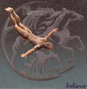

| Artist: | Pendragon |
| Title: | Believe |
| Label: | Toff PEND13CD/SPV SPV 085-48462 CD |
| Length(s): | 52 minutes |
| Year(s) of release: | 2005 |
| Month of review: | [01/2006] |
| 1) | Believe | 2.57 |
| 2) | No Place For The Innocent | 5.36 |
| 3) | The Wisdom Of Solomon | 7.07 |
The Wishing Well
| 4) | For Your Journey | 4.31 |
| 5) | So By Sowest | 6.48 |
| 6) | We Talked | 5.29 |
| 7) | Two Roads | 4.19 |
| 8) | Learning Curve | 6.38 |
| 9) | The Edge Of The World | 8.20 |
After this relatively short tune we move into the rocky No Place For The Innocent. The guitar sound of Barrett has changed a bit, it is rockier, more chord filled, less those long melodic flowing ones. A violin takes care of the softer sides of this song. Barrett still has his signature voice, quite an accent, but an accent I have grown used to. The second half has a dreamy interlude, with Barrett alternating between vocoded and some 'tearful' vocals. Then the power is turned on as the guitar sets in again for its solo.
Before we enter the epic tune of the album, we still have The Wisdom Of Solomon to go. It shows how Pendragon has widened their horizon, without losing the immediate recognition: the flamenco styled guitar, the modern sonic interludes, but the guitar is very much in Black Knight/Alaska style. The vocal melodies might not be as striking as on, say Paintbox, and it lacks the emotionality of Alaska, but it is good to hear a band renewing itself, especially since the last album did not have more offer than its predecessor.
The Wishing Well is the epic tune of this album, split into four parts. For Your Journey is the whispering, modern opening. Plenty of atmosphere here, and the song even has a hint of classical music, a bit like Barber's Adagio For Strings. Later, the ethereal female vocals come in again (from the first track). So By Sowest opens with tinkling acoustic guitar, a bit harpsichord like. The melodies are very accessible here, but all is not peace and quiet in this Hobbit-infested land. At times, a heavy chord comes through, a bit like a peal of thunder. However, it does not make for a change yet. If anything the music gets folkier and more acoustic. Then we are in for a long melodic solo.
We Talked is percussive styled piece with the world music influences coming back in, and Barrett singing pacily. There is indeed quite a pace to this song, and a certain swing too. In the middle we make a break after which the throaty vocal samples come in. The band is slightly going over the top here, and I am going with them. The final minute is soundscape. We thus come to the peace and quiet of Two Roads, a bit Kitaro plus acoustic guitar. But not all is peace and quiet, in fact, the first verse is repeated in plodding rock mode. But in between we do get the Floydian guitar lines, ending in an emotional guitar solo on what seems to be a reggae style rhythm. How can it be?
Learning Curve has a dark bluesy guitar feel and twinkling percussives and synths. The pan flutish sounds sound a bit too familiar. There is something of Robbie Robbertson in the feel here, you know, Somewhere Down The Crazy River. Halfway we get those typical Pendragon guitar lines, rather poppy and up-beat. As happens often on this record, there is some space for acoustic guitars, including a flamenco oriented one but with electric guitar. Then the pace comes back in and the band bursts loose. We end dark and dense.
The Edge Of The World offers a contrast by starting off with whispered vocals, more spoken than sung, lined by acoustic guitar. The song stays subdued with some guitar lines, stretching out thoughtfully between my ears. We do get a build-up, one that reminds of Pink Floyd, ever a strong influence on the band, but the song does not pretend to rock or anything. It is the time of letting go. For its length, surprisingly little happens.